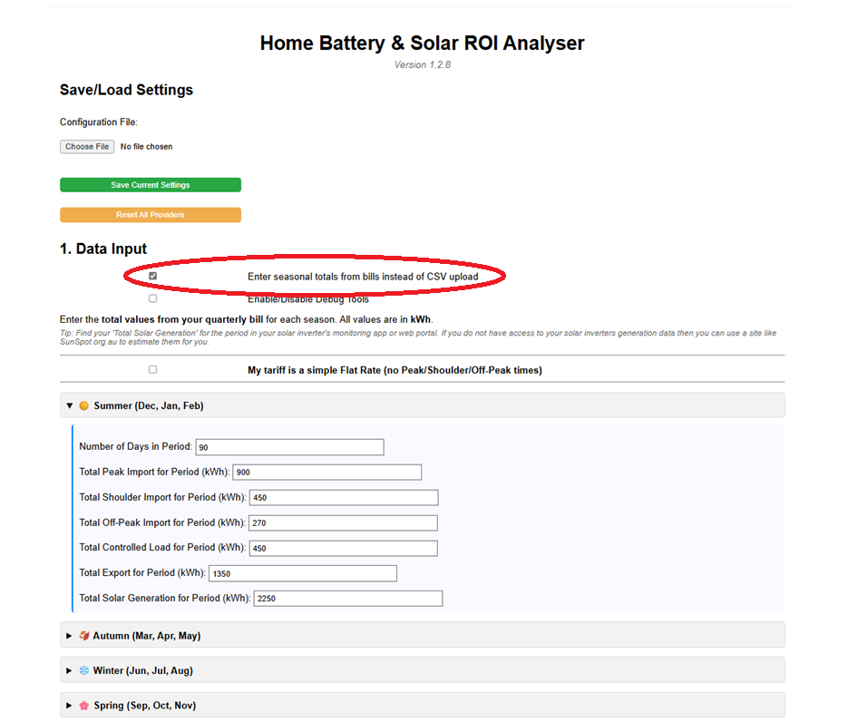
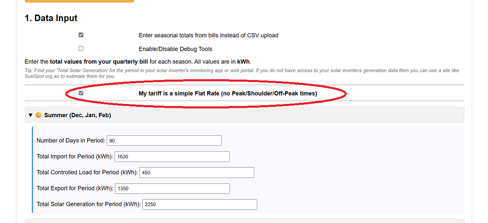
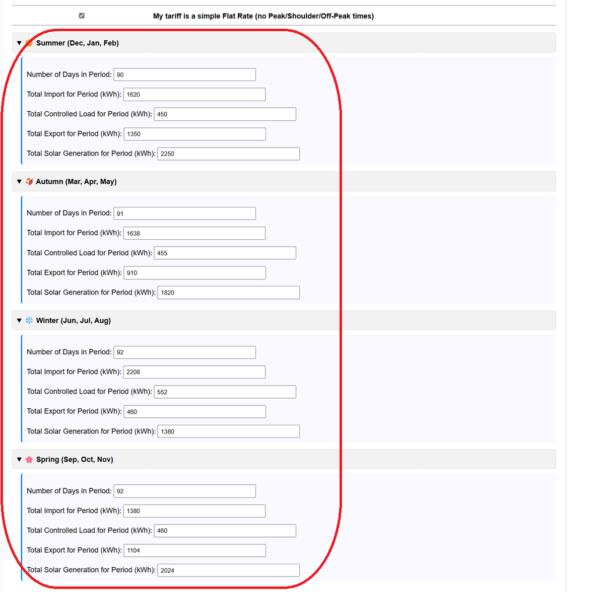

Walkthrough: Entering Bill Data (Manual Mode - Flat Rate Tariff)
This guide shows how to use the Manual Mode when you don't have a CSV file and your electricity plan uses a simple Flat Rate tariff (the same price per kWh regardless of the time of day).
Step 1: Select Manual Mode
In the "1. Data Input" section of the analyser, check the box labelled:
Use manual daily averages instead of CSV upload
This will hide the CSV upload options and reveal the manual entry fields.

Step 2: Indicate Flat Rate Tariff
Just below the introductory text in the Manual Input section, check the box labelled "My tariff is a simple Flat Rate (no Peak/Shoulder/Off-Peak times)".

Checking this box will simplify the data entry fields within each season, hiding the Peak/Shoulder/Off-Peak inputs and showing a single "Total Import" field instead.
Step 3: Enter Seasonal Bill Totals (Flat Rate)
Now, expand each season (Summer, Autumn, Winter, Spring) and enter the total values for that billing period directly from your quarterly electricity bills or solar monitoring app.
For each season, enter:
- Number of Days in Period: Find the exact number of days covered by the bill for that season.
- Total Import for Period (kWh): Find the total kWh imported from the grid on your bill (often just labelled 'Usage' or 'General Usage' on flat rate bills) and enter it here.
- Total Controlled Load for Period (kWh): If you have a separate controlled load (like off-peak hot water), enter the total kWh used for that circuit during the period. Enter 0 if you don't have one.
- Total Export for Period (kWh): Find the total solar energy exported to the grid (Feed-in) on your bill and enter it.
-
Total Solar Generation for Period (kWh): Important: This is NOT usually on your electricity bill. Find this total in your solar inverter's monitoring app or web portal for the same period. If you can't find it, use an online estimator like SunSpot for your location and system size.
Repeat this process, entering the specific totals from your bills for Autumn, Winter, and Spring.

Step 4: Configure Other Analyser Sections
Using Manual Mode mainly affects the "1. Data Input" section but you still need to configure the rest of the analyser. Click on the Section below for details:
- Section 2: Existing SystemEnter the details of your current solar panels or batteries, if any.
- Section 3: New SystemEnter the details of the system you are considering installing (panel size, battery size, costs).
- Section 4: Financial InputsAdd loan details or discount rates if applicable.
- Section 5: Providers & TariffsConfigure the specific rates and charges for the electricity providers you want to compare. For a flat rate plan, you'll typically just need one 'Flat Rate' import rule and one export rule.
- Section 6: Analysis PeriodSet the lifespan for the analysis and degradation rates.
Step 5: Run the Analysis
Once all sections are configured, click the "Run ROI Analysis" button at the bottom.

The analyser will use the seasonal totals you provided to estimate daily averages and simulate the performance and financial return of your proposed system.